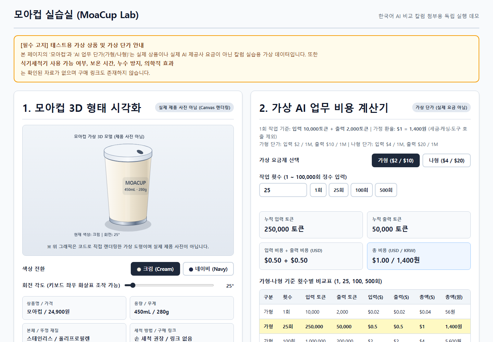
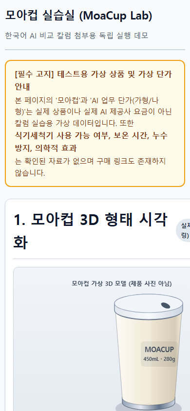
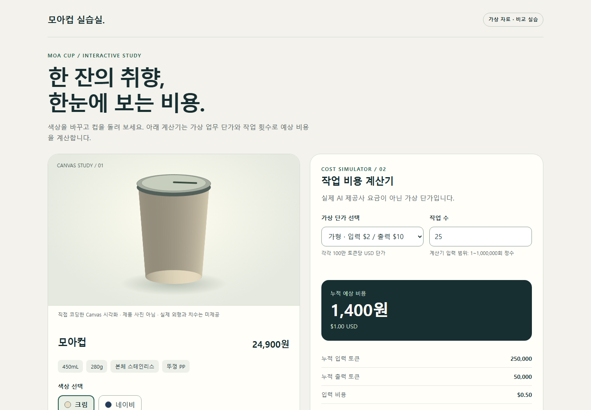
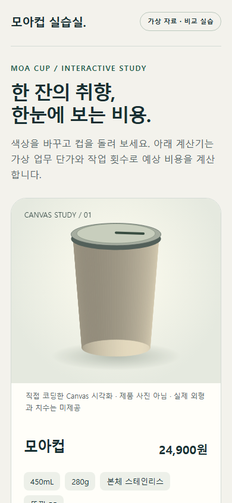
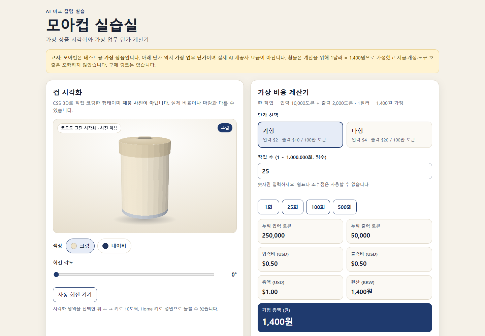
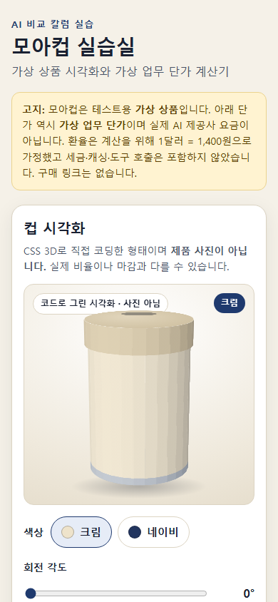

Gemini 4 Argon390px 모바일 화면에서 가로 넘침 발견: 문서 폭 600px.실제 HTML 열어 보기 →shorts.md factcheck.csv costs.csv response_raw.md모바일 실제 실행 캡처
GPT-6.1 Sol Medium검사한 데스크톱·390px 모바일 화면에서 가로 넘침 미발견.실제 HTML 열어 보기 →shorts.md factcheck.csv costs.csv response_raw.md모바일 실제 실행 캡처
Claude Opus 5.5검사한 화면에서 가로 넘침 미발견. 단, 대본 장면표와 제작 메모에 지시 충돌이 있습니다.실제 HTML 열어 보기 →shorts.md factcheck.csv costs.csv response_raw.md모바일 실제 실행 캡처